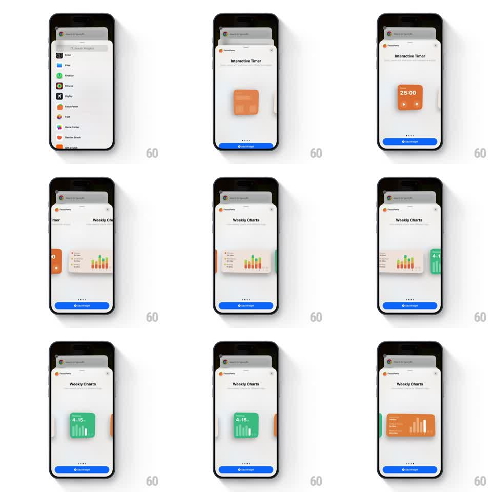

Media
Frame-by-frame

Rebuild this animation 1:1: the iOS widget gallery's preview swipes - inside an app's widget sheet, swiping sideways pages through size variants, the preview card crossfading between small, medium, and large renders.

Rebuild this animation 1:1: the iOS widget gallery's preview swipes - inside an app's widget sheet, swiping sideways pages through size variants, the preview card crossfading between small, medium, and large renders. ## Integration Integration: stack-agnostic spec - springs given as stiffness/damping, timed motions as duration + curve; map every value to your framework and animation library of choice. ## Scene The system widget sheet for an app (FocusPomo): header with the app name, a large preview area, page dots, and a blue "Add Widget" button. The preview pages through the widget's variants: "Interactive Timer" small square (25:00), "Weekly Charts" medium (bar chart), and a large variant, each rendered as a real widget. ## Motion spec Pattern: paged preview carousel, gesture-driven. - The preview tracks the horizontal swipe 1:1, the adjacent variant peeking in from the edge. - On release, it snaps to the nearest page (spring stiffness 300 damping 26) with light momentum on flicks. - During the page change, the widget's content crossfades between size layouts (250ms) - the small timer's digits do not stretch into the medium chart; each size is its own render. - The page dots update on settle, and the sheet header and Add Widget button stay fixed. ## Calibration - Each variant renders at its true aspect (square, 2:1, large square) centered in the preview area with quiet padding. - The swipe wraps through all sizes in one direction without dead ends. ## Reduced motion Previews crossfade on tap of dots. ## Don't miss - The sheet's grabber stays at top - the sheet itself does not move with swipes. - Widget previews are live renders (crisp text, real colors), not screenshots with compression blur.